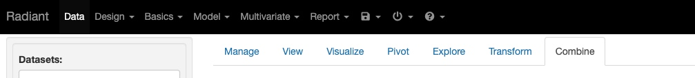

所属 Topic：数据科学工作流 · 类型：方法
增强分析#
Gartner2017年在报告《Augmented Analytics Is the Future of Data and Analytics》中提出。增强分析主要是借助AI的手段提高传统数据分析的效率，发觉更多的数据价值。
增强分析相关的技术分类:
1.数据准备#
数据清洗，自动化发现等
产品：ClearStory Data、Datawatch => Altair、Paxata => DataRobot、 Trifacta
Tableau: Tableau Prep
PowerBI: Power BI Premium
2.增强数据分析#
a) 易用性
- 自然语言查询NLQ: 比如NL2SQL，将用户的问题转为查询的sql语句。
技术: google 2017 Analyza， NLIDB， 深度学习
代表产品: ThoughtSpot， Qlik Insight Bot、QuickBI 的智能小Q、阿里小蜜
- 自然语言生成NLG
将语义信息以人类可读的自然语义形式表达。比如数据到文本，图像到文本。数据到文本，可以将分析结果转为更好理解的叙述，讲好数据故事。
技术发展: 基于模版的NLG ， 基于神经网络的NLG
产品： 目前应用还比较简单
b) 自动化
技术：自动洞察，自动可视化
自动洞察:
- 关联
- 异常发现
- 自动聚类
产品：google的PowerBI-快速洞察
自动可视化:
- 自动化图标
- 自动化报表
产品: 开源软件AVA,Rath， 可视化领域顶级会议 IEEE VIS
3.增强机器学习#
这里更加关注模型本身，比如特征工程、模型部署、训练、
产品: AutoML
Meta-Leaning
（1）特征工程
常用的工具包括
Tsfresh(时序相关的数据https://tsfresh.readthedocs.io/en/latest/text/introduction.html)、
Trane、
Categorical Encoding、boruta_py、Featuretools(https://github.com/FeatureLabs/featuretools)
(2)模型选择与超参优化
google的autoML系列
阿里云PAI
工具平台#
(1) BI工具
12款自助式BI 测评: https://zhuanlan.zhihu.com/p/102405633
(2)一些开源的工具
R shiny: https://docs.rstudio.com/shinyapps.io
应用案例: https://zhuanlan.zhihu.com/p/78403907
基于R shiny的开源工具:
- Radiant: https://github.com/radiant-rstats/radiant， http://vnijs.github.io/radiant/index.html
Radiant 是一个搭建好的，有点类似SPSS的工具。默认提供了data、design、model，report(自己编写的)等功能。可以自己编写自己的需求函数

有一点非常棒的地方是，在前面进行探索分析的时候，可以将相应的操作直接转换成对应的代码，生成的Rmarkdown的report中。另外这个Rmarkdown和在本地使用的Rstudio一样，可以支持R，python,shell等语法
安装方式:
install.packages("radiant", repos = "https://radiant-rstats.github.io/minicran/", type = 'binary')
radiant::radiant()
- ShinyProxy: https://shinyproxy.io/
Open Analytics在Shiny 开源版本的基本功能之上开发了 ShinyProxy，提供了一系列扩展的增强特性，如身份验证和授权、 TLS 协议支持、Shiny 应用程序容器化及多并发支持等，同时 ShinyProxy 是基 Apache 许可的100％开源项目。ShinyProxy 前端使用成熟的企业级 Java 框架 Spring Boot 来完成Web应用程序的用户认证、鉴权及后端 Shiny 应用的调度和管理，后端基于 Docker 技术灵活运行封装了 R 应用的 Shiny 容器。
基于python的: dash , bokeh, streamlit
dash: https://github.com/plotly/dash
https://www.jianshu.com/p/0aaafaa33bb1
案例: https://github.com/ffzs/DA_dash_hr/blob/master/app_hr.py
不同工具的简单介绍：https://medium.com/swlh/data-viz-with-python-apps-dashboards-6693f46f5e6a
(3)其他个人写的：
https://zhuanlan.zhihu.com/p/34153327
https://github.com/JhuangLab/BioInstaller
（4）开源的dashboard
https://www.cnblogs.com/rongfengliang/p/11386788.html
比如superset，dash， grafana。。。